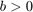
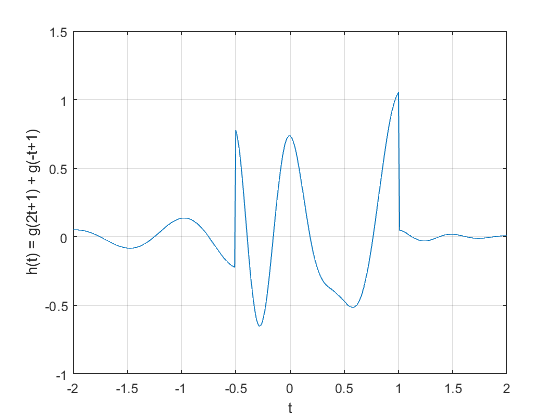
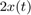

Practica 3 Señales en Tiempo Continuo
Grupo: 2TV1
Materia: Señales y Sistemas
Alumnos:
Panama Segura Sayuri
Perez Escobar Hiram Etzael
Robles Filio Eduardo
Rodriguez Moreno Luis Manuel
Profesor: Dr. Rafael Martínez Martínez
Contents
Introducción
MatLab
MATLAB (Matrix Laboratory, “laboratorio de matrices”). Es un software matemático con entorno de desarrollo integrado (IDE) el cual contiene un lenguaje de programación propio (Lenguaje M) y es multiplataforma (Unix, Windows y Apple Mac Os X). MATLAB es un software de gran uso en Centros de Investigación y Desarrollo así como en universidades. En 1984 surge la primera versión, creado por Cleve Moler, con la idea de usar paquetes de subrutinas escritas en Fortran en los cursos de Análisis Numérico y Álgebra Lineal, sin tener una necesidad de programas que usaran este lenguaje.
El lenguaje de programación M se creó en 1970 proporcionando un acceso sencillo al software de matrices LINPACK y EISPACK sin tener que hacer uso del lenguaje Fortran. Ya en 2004 se apreciaba que MATLAB era usado por aproximadamente más de un millón de personas, tanto académicos como empresarios. Dentro de sus principales funciones se encuentran:
- Manipulación de Matrices.
- La representación de datos y funciones.
- Implementación de algoritmos.
- Creación de interfaces de usuario (GUI).
- Comunicación con programas en otros lenguajes y con otros dispositivos Hardware.
Para mayor interés puede consultar el siguiente enlace.
http://www.dm.unibo.it/~piccolom/didattica/num_met/SAmatlab_09.pdf
Octave
Octave es un lenguaje de alto nivel para realizar cálculos numéricos en el ordenador, y también es un programa capaz de interpretar este lenguaje y realizar los cálculos. Octave ofrece una interfaz de usuario interactiva, orientada a línea de comandos, pero también puede ser utilizado en modo no interactivo, leyendo sus órdenes de fichero. Octave originalmente fue desarrollado para facilitar la tarea a los estudiantes de Ingeniería Química de la universidad de Texas, sin que estos tuvieran que enfrentarse a las dificultades de la programación.
Su flexibilidad en seguida lo hizo popular y su uso se expandió a otros problemas relacionados con el álgebra lineal y las ecuaciones diferenciales y favoreció su desarrollo, agregando las aportaciones de la comunidad de usuarios. Otros programas de características similares, y hasta cierto punto compatibles, son son el lenguaje R de la FSF, Matlab y Scilab. Estos dos últimos propietarios. Octave es software libre (bajo licencia GNU), lo que significa que se puede usar y redistribuir libremente, y que cualquiera puede ayudar para mejorarlo. Octave está disponible en Internet en http://www.octave.org.
Para mayor interés puede consultar el siguiente enlace.
https://cimec.org.ar/foswiki/pub/Main/Cimec/MetodosNumericosYSimulacion/metnums.pdf
Python
Python es un lenguaje de programación el cual fue creado por el holandés Guido van Rossum en los años 90. Su nombre esta inspirado en el grupo humorista británico Monty Python. Este lenguaje es caracterizado por su simplicidad y rápido aprendizaje. Si queremos hacer el clásico hola mundo en este lenguaje, nos basta con escribir print “hola mundo”. Las características principales de este lenguaje son cuatro:
- Tipado dinámico, no es necesario indicar el tipo de variable al momento de declararlo ya que lo identifica automaticamente.
- Fuertemente tipado, no se permite tratar de manera implicita a una variable como si fuera de otro tipo.
- Multiplataforma, se refiere a que no depende de un sistema operativo en especifico para funcionar bien.
- Multiparadigma, python es un lenguaje orientado a diversos paradigmas entre ellos tiene la programacion orientada a objetos, programación estructurada, programación funcional y programación orientada a aspectos.
Para mayor interés puede consultar el siguiente enlace.(Seleccione el boton verde READ de el enlace)
< https://legacy.gitbook.com/book/swaroopch/byte-of-python/details >
Objetivos
- Manipulación básica de MATLAB
- Gráficas de señales reales y complejas continuas
- Transformación de señales continuas (escalamientos y traslaciones)
- Calculo de energía y potencia de señales continuas
Ejercicio 1
Crea una función que se llame fun1 y reciba dos parametros y la función debe regresar la evaluación , esta función debe trabajar con y . Debe mostrar su código en el reporte (sin ejecutar).
function [f] = fun1(w,a)
if imag(a)~=0
disp('error')else
f=a./(a.^2+w.^2)
end
end
Ejercicio 2
Construya una función que gráfique funciones de en el formato de su elección y pruebe su código mostrando la gráfica de vs en el intervalo para , no debe incluir el código, solo el uso de la función para mostrar la gráfica.
Función de graficación
Primeramente creamos nuestro vector que en este caso sera para definir el intervalo en el cual vamos a evaluar la función en este caso será de -2 hasta 2 y el incremento será de 0.001
w=-2:0.001:2;
Posteriormente metemos este argumento a la función y el segundo argumento sera la definición de nuestra función que en este caso es vs con y se obtendrá la gráfica que resulte
F=@(w) 1./(1+w.^2); transf2(w,F(w));
Ejercicio 3
Construya una función que gráfique funciones de en el formato de su elección y pruebe su código mostrando la gráfica de la transformada de Fourier en de la función , puede utilizar una función anonima para este fin, no debe incluir el código, solo el uso de la función para mostrar la gráfica. Reporte la gráfica de de ![$[-1,5]$](Practica_03_eq05003862285080136837.png) (recuerde que ya tiene una función para esto). Reporte del espectro de magnitud y del espectro de fase en (puedes con sultar con help la descripción de abs, angle, atan2). Solo reporte las graficas.
(recuerde que ya tiene una función para esto). Reporte del espectro de magnitud y del espectro de fase en (puedes con sultar con help la descripción de abs, angle, atan2). Solo reporte las graficas.
Grafica de f(t)
t=(-1:.001:5);
z=@(t) exp(-2.*t).*(t>=0);
plot (t,z(t))
grid on;
Grafica de f(w)
z=2+t*1i; graficadora(t,rdivide(real(z), real(z).^2+imag(z).^2), rdivide (-imag(z), real(z).^2+imag(z).^2)) %%Espectro de magnitud y fase x=exp(-2.*t); fs=20; espectro=fft(x);%transformada rapida de fourier de x espectro=espectro(1:end/2); freq=linspace(0,fs/2,length(espectro)); espreal=real(espectro); espimg=imag(espectro); magnitud=abs(espectro); fase=angle(espectro); t=0:1/fs:(length(x)-1)/fs; figure(2) subplot(2,1,1); plot(freq,magnitud); title('Espectro de magnitud'); subplot(2,1,2); plot(freq,fase); title('Espectro de fase');
Warning: Integer operands are required for colon operator when used as index
Ejercicio 4
M1.1 Funciones Anónimas
Muchas funciones simples se representan más convenientemente mediante el uso de funciones anónimas en MATLAB. Una función anónima proporciona una representación simbólica de una función definida en términos de operadores y funciones de MATLAB. Por ejemplo, considere definir la siguiente señal:
f = @(t) exp(-t).*cos(2*pi*t);
El primer argumento de la función anónima identidfica la variable o las variables de las cual depende dicha función. Una vez definida puede evaluarse simplemente pasando los valores de entrada de interés. Por ejemplo:
t = 0; f(t)
ans =
1
El mismo resultado se obtiene al pasar directamente.
f(0)
ans =
1
Las entradas vectoriales permiten la evaluación de múltiples valores simultáneamente. Considere la tarea de trazar sobre el intervalo . El comportamiento general de la función es claro: debe oscilar cuatro veces con una envoltura en descomposición. Dado que los bocetos manuales precisos son engorrosos, las gráficas generadas por MATLAB son una alternativa atractiva.
Supongamos que el vector t se elige para incluir solo los números enteros contenidos en , a saber, .
t = (-2:2)
t =
-2 -1 0 1 2
Esta entrada vectorial se evalúa para formar una salida vectorial.
f(t)
ans =
7.3891 2.7183 1.0000 0.3679 0.1353
El comando plot representa el resultado gráfico que es el siguiente.
figure plot(t,f(t)); xlabel('t'); ylabel('f(t)'); grid on;
Las líneas de la cuadrícula, agregadas mediante el comando " grid ", ayudan a la identificación de la función. Desafortunadamente, la gráfica no ilustra el comportamiento oscilatorio esperado. Se requieren más puntos para representar adecuadamente f (t).
Entonces la pregunta es, ¿cuántos puntos son suficientes?. Si se eligen pocos puntos, la información se pierde. Si se eligen demasiados puntos, la memoria y el tiempo se pierden. Se necesita un equilibrio. Para las funciones oscilatorias, el trazado de 20 a 200 puntos por oscilación suele ser adecuado. Para el presente caso, se elige t para dar 100 puntos por oscilación.
t=linspace(-2,2,400);
De nuevo, la función es evaluada y trazada.
figure plot(t,f(t)); xlabel('t'); ylabel('f(t)'); grid on;
M1.2 Operadores relacionales y la función de paso de unidad
La función escalón unitario surge naturalmente en muchas situaciones prácticas. Por ejemplo, un escalón unitario puede modelar el acto de encender un sistema. Con la ayuda de operadores relacionales, las funciones anónimas pueden representar los escalones unitarios.
En MATLAB, un operador relacional compara dos elementos. Si la comparación es verdadera, se devuelve un verdadero lógico (1). Si la comparación es falsa, se devuelve un falso lógico (0). Algunas veces llamadas funciones de indicador, los operadores relacionales indican si una condición es verdadera. Seis operadores relacionales están disponibles: ,  , , , y .
, , , y .
La función escalón unitario se define fácilmente utilizando el operador relacional .
u = @(t) t>=0;
Cualquier función con una discontinuidad de salto, como el escalón unitario, es difícil de trazar. Considere trazar en el intervalo .
t = (-2:0.001:2); figure plot (t,u(t)); xlabel('t'); ylabel('u(t)'); grid on;
Dos problemas significativos son evidentes en la gráfica resultante. En primer lugar, MATLAB escala automáticamente los ejes del trazado para delimitar estrechamente los datos. En este caso, esta característica normalmente oculta la mayor parte de la gráfica. En segundo lugar, MATLAB conecta los datos del trazado con las líneas, lo que dificulta la visualizacion de una discontinuidad de salto real. La cantidad de elementos que contiene el vector t hace que se muestre una línea de pendiente errónea entre . Estas situaciones las podemos corregir de la siguiente manera.
t = (-2:0.01:2); %Agregamos mas elementos a vector t plot (t,u(t)); xlabel('t'); ylabel('u(t)'); xlim([-2 2]); %Especificamos los limites de ylim([-0.5 1.5]); %visualizacion de los ejes X y Y grid on;
Los operadores relacionales se pueden combinar utilizando AND lógico , OR lógico y negación lógica .
Por ejemplo, y ambas pruebas si Para demostrar, considere definir y trazar el pulso unitario 
p = @(t) (t>=0 & t<1); t = (-1:0.01:2); plot(t,p(t)); xlabel('t'); ylabel('p(t) = u(t) - u(t-1)'); grid on; xlim([-1 2]); ylim([-0.5 1.5]);
Para los operandos escalares, MATLAB también admite dos construcciones lógicas de cortocircuito. Un AND lógico de cortocircuito se realiza utilizando , y un OR lógico de cortocircuito se realiza utilizando . Los operadores lógicos de cortocircuito son a menudo más eficientes que los operadores lógicos tradicionales porque prueban la segunda parte de la expresión solo cuando es necesario. Es decir, cuando la expresión escalar A se encuentra falsa en , la expresión escalar no se evalúa, ya que un resultado falso ya está garantizado. De manera similar, la expresión escalar no se evalúa cuando la expresión escalar A se encuentra verdadera en , ya que un resultado verdadero ya está garantizado.
M1.3 Visualizando Operaciones en la Variable Independiente
Comúnmente se realizan dos operaciones en la variable independiente de una función: traslacion y escalamiento. Las funciones anónimas son adecuadas para investigar ambas operaciones.
Considere la función  ya que en MATLAB no es posible multiplicar funciones anónimas se necesita definir explícitamente a
ya que en MATLAB no es posible multiplicar funciones anónimas se necesita definir explícitamente a
g = @(t) exp(-t).*cos(2*pi*t).*(t>=0);
Una operacion de traslacion y escalamiento se representa por , donde a y b son constantes reales arbitrarias. Como ejemplo, considere la posibilidad de trazar sobre el intervalo
t = (-2:0.01:2); g1 = g(2*t+1); plot(t,g1); xlabel('t'); ylabel('g(2t+1)'); grid on; xlim([-2 2]); ylim([-1 1.5]);
Con la funcion se comprime por un factor de 2, lo que da como resultado dos veces las oscilaciones por unidad t. Añadiendo la condición , la forma de onda se desplaza hacia la izquierda.
A continuación, considere la posibilidad de trazar sobre el intervalo . Con  , la forma de onda se reflejará, al agregar la traslacion con , la forma de onda final se desplaza a la derecha.
, la forma de onda se reflejará, al agregar la traslacion con , la forma de onda final se desplaza a la derecha.
g2 = g(-t+1); plot(t,g2); xlabel('t'); ylabel('g(-t+1)'); grid on; xlim([-2 2]); ylim([-1 1.5]);
Como se puede apreciar los ejemplos anteriores son relativamente sencillos, por lo que ahora consideraremos trazar la siguiente funcion esto sobre el intervalo
g1 = g(2*t+1); g2 = g(-t+1); h = g1+g2; plot(t,h); xlabel('t'); ylabel('h(t) = g(2t+1) + g(-t+1)'); grid on; xlim([-2 2]); ylim([-1 1.5]);
Observe que un bosquejo a mano de la funcion posee cierto grado de dificultad, pero en MATLAB con funciones anónimas ha sido bastante sencillo.
M1.4 Integración numérica y estimación de la energía de la señal.
A menudo muchas señales interesantes tienen representaciones matemáticas no triviales. Calcular la energía de la señal, que implica integrar la norma al cuadrado de dichas señales, puede ser una tarea desalentadora. Afortunadamente, muchas integrales difíciles se pueden estimar con precisión mediante técnicas de integración numérica. Incluso si la integración parece simple, la integración numérica proporciona una buena manera de verificar los resultados analíticos.
Para comenzar, considere la siguiente señal simple.
.
La energía de se representa como.
La integral de energía también puede ser evaluada numéricamente. Consideraremos realizar un método simple de aproximación rectangular, evalúe el integrando en puntos uniformemente separados por , multipliqe cada uno por para caluclar as áreas del rectángulo y luego sumetodos los rectángulos.
Primero, creamos la función x (t).
x = @(t) exp(-t).*(t>=0 & t<1);
Al dejar , se crea un vector de tiempo adecuado.
t = (0:0.01:1);
El resultado final se calcula utilizando el comando suma.
Ex = sum(x(t).*x(t)*0.01)
Ex =
0.4367
El resultado no es perfecto, pero al 1% de error relativo está cerca. Al reducir , se mejora la aproximación. Por ejemplo, produce.
t = (0:0.001:1); Ex = sum(x(t).*x(t)*0.001)
Ex =
0.4328
0.1% de error relativo.
Aunque es fácil de visualizar, la aproximación rectangular no es la mejor técnica de integración numérica. La función MATLAB quad implementa una mejor técnica de integración numérica llamada cuadratura de Simpson adaptativa recursiva. Para operar, quad requiere una función que describa el integrando, el límite inferior de integración y el límite superior de integración. Tenga en cuenta que no es necesario especificar ?t. Para usar quad para estimar Ex, primero se debe describir el integrando.
x_2 = @(t) exp(-2*t).*(t>=0 & t<1); % x(t) elevada al cuadrado
La estimación de Ex sigue inmediatamente.
Ex = quad(x_2,0,1) %Por alguna razon esta función esta siendo removida de MATLAB conforme se vá actualizando
Ex =
0.4323
Se pueden usar las mismas técnicas para estimar la energía de señales más complejas. Considere definida previamente. La energía se expresa como.
Existe una solución de forma cerrada, pero requiere un poco de esfuerzo. MATLAB proporciona una respuesta más rápida.
g_2 = @(t) exp(-2*t).*(cos(2*pi*t).^2).*(t>=0);
Aunque el límite superior de integración es infinito, la envoltura en descomposición exponencial garantiza que sea efectivamente cero mucho antes de . Por lo tanto, se usa un límite superior de junto con %\bigtriangleup t=0.001%.
t = (0:0.001:100); Eg = sum(g_2(t)*0.001)
Eg =
0.2567
Se obtiene una aproximación ligeramente mejor con la función quad.
Eg = quad(g_2,0,100)
Eg =
0.2562
Ejercicio 5
Resuelve el problema 1.2.2 del libro Linear Systems and Signals - B. P. Lathi usando las herramientas del paso anterior.
Problema 1.2.2
Para la señal realice las graficas
a)
b)
c)
d)
e)
x = @(t) -t.*(t>=-4 & t<0) + t.*(t>=0 & t<=2); t=[-10:0.001:10]; y=x(t); plot(t,y); xlim([-10 10]); ylim([-1 5]); grid on; title("Problema 1.2.2 Lathi") xlabel('t'); ylabel('x(t)=-t[u(t+4)-u(t)]+t[u(t)-u(t-2)');
a=x(t-4); plot(t,a); xlim([-10 10]); ylim([-1 5]); grid on; title("Inciso a)") xlabel('t'); ylabel('x(t-4)');
b=x((1/1.5)*t); plot(t,b); xlim([-10 10]); ylim([-1 5]); grid on; title("Inciso b)") xlabel('t'); ylabel('x(t/1.5)');
c=x(-t); plot(t,c); xlim([-10 10]); ylim([-1 5]); grid on; title("Inciso c)") xlabel('t'); ylabel('x(-t)');
d=x(2*t-4); plot(t,d); xlim([-10 10]); ylim([-1 5]); grid on; title("Inciso d)") xlabel('t'); ylabel('x(2t-4)');
e=x(2-t); plot(t,e); xlim([-10 10]); ylim([-1 5]); grid on; title("Inciso e)") xlabel('t'); ylabel('x(2-t)');
Ejercicio 6
Escriba una función que se llame energia que reciba como argumento una función (anonima o simbolica) y que regrese el calculo de la energía, para esto puede resultar útil investigar las instrucciones int , integral Se presupone utilizar el código solo con funciones de energia. Muestre el código sin ejecutar, y posteriormente resuelva el problema 1.1.3
Función de energía
Para esta función vamos a definir primeramente una variable simbólica Esta función devuelve la expresión analítica de la energía y su valor numérico. Para esto nuestra función requiere de tres parámetros, el primero es la función, el segundo es el límite inferior de la función y el segundo el límite superior de la misma.
Nuestra función tiene la siguiente estructura
function E = energia(f,a,b)
display('Enegergía expresión analítica: ')int((sqrt(f^2))^2)
display('Evaluando ')E=int(f,[a b]);
end
Para probarla realizaremos el ejercicio 1.1.3 que nos pide lo siguiente
Encontrar la energía del par de señales x(t) y y(t) descritas en las figuras. Bosqueja y encuentra las energías de las señales x(t)+y(t) y x(t)-y(t)
Declaramos dos variables simbólicas
Ejercicio 7
Escriba una función que se llame potencia que reciba como argumento una función (anonima o simbolica) y que regrese el calculo de la potencia para esto puede resultar útil investigar las instrucciones int , integral Se presupone utilizar el código solo con funciones de potencia. Muestre el código sin ejecutar, y posteriormente resuelva el problema 1.1.4
function P = potencia(f,T)
disp('potencia de una expresion analitica'); disp('evaluando');P=(1/T) * integral(f,-T/2, T/2);
end
Problema 1.1.4 Encuentre la potencia de la señal periódica . Encuentra también las potencias y los valores rms de:
a)
b) 
c)
Figura
x=@(t) t.^3; t=-100:0.1:100; plot(t,x(t),'LineWidth',2) grid on; ax = gca; ax.XAxisLocation = 'origin'; ax.YAxisLocation = 'origin'; ax.Box = 'off'; title('Gráfica de la señal f(t)=t^3 ')
a)
f=(@(t) ((abs(-(t.^3))).^2));
p = potencia(x,4)
% Valor de RMS
rms = sqrt(p)
Potencia de una expresion analitica evaluando p = 1.1102e-16 rms = 1.0537e-08
b)
f=(@(t) ((abs(2.*(t.^3))).^2));
potencia(f,4)
% Valor de RMS
rms=sqrt(ans)
Potencia de una expresion analitica
evaluando
ans =
36.5714
rms =
6.0474
c)
f=(@(t) ((abs((t.^3))).^2));
potencia(f,4)
% Valor de RMS
rms=sqrt(ans)
Potencia de una expresion analitica
evaluando
ans =
9.1429
rms =
3.0237